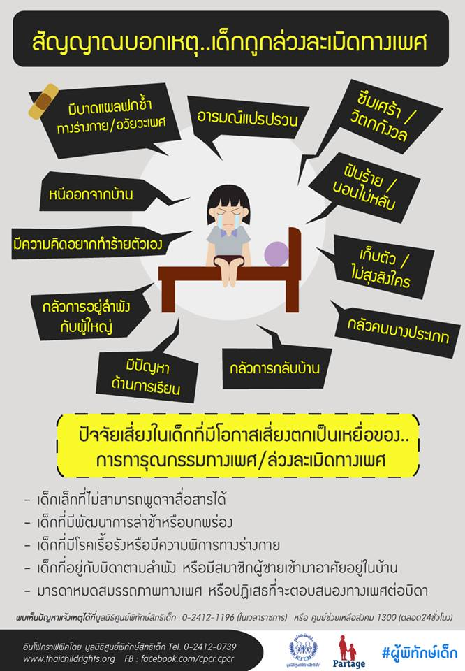

ล่วงละเมิดทางเพศ (Sexual Harassment) หยุดให้ทัน ป้องกันซึมเศร้า
Sexual Harassment หมายถึง พฤติกรรมที่ฝ่ายหนึ่งแสดงออกถึงนัยยะทางเพศ ทำให้เหยื่อรู้สึกไม่ดี ถูกคุกคาม ไม่ปลอดภัย หรือถูกลดทอนศักดิ์ศรีคุณค่าความเป็นมนุษย์ Sexual Harassment มีหลายประเภท คนส่วนใหญ่มักคิดว่าจะแสดงออกทางร่างกายเท่านั้น แต่จริงๆ แล้วมีอีกหลายรูปแบบซึ่งสร้างบาดแผลทางใจให้กับเหยื่อได้เช่นกัน
การกระทำแบบไหนที่เรียกว่าเข้าข่าย?
1. สัมผัสทางกาย เป็นการใช้อวัยวะส่วนใดส่วนหนึ่งของผู้กระทำ ไปสัมผัสกับร่างกายของเหยื่อ ซึ่งไม่ได้ขออนุญาตก่อน เช่น เเตะเนื้อต้องตัว การลูบไล้ โดยอวัยวะที่ใช้มีได้หลายส่วน เช่น มือ ขา สะโพก
2. คำพูด เป็นรูปแบบที่พบได้บ่อยในชีวิตประจำวัน เช่น หยอกล้อกันทางคำพูดทั้งทางตรง ทางอ้อม เล่นมุกตลกเรื่องเพศ เช่น “ทำไมแบนเหมือนไม้กระดาน” “เห็นแล้วแข็งเลย” เมื่อเหยื่อทำท่าไม่พอใจหรือสีหน้าไม่ดี ผู้กระทำมักจะพูดแก้ตัว เช่น “ล้อเล่นน่า” “คิดมากไปได้”
3. สายตาเเละสีหน้า เป็นรูปแบบที่ระบุได้ยาก ผู้กระทำส่งสายตาหรือแสดงออกทางสีหน้าที่ส่อถึงเรื่องทางเพศ โดยที่เหยื่อรู้ตัวหรือไม่รู้ก็ได้ หากเหยื่อเห็นจะเกิดความรู้สึกหวาดกลัว ขยะแขยง เช่น การแลบลิ้นเลียรอบปาก การจ้องมองที่หน้าอก
4. ข้อความที่เขียนหรือพิมพ์ ทั้งในโลกจริงและโลกออนไลน์ เป็นข้อความที่สื่อถึงเรื่องทางเพศ ในโลกจริงอาจเป็นข้อความในโพสต์อิท เศษกระดาษที่ส่งไปให้เหยื่อ เช่น “ขอจับที” ส่วนในโลกออนไลน์มีได้หลายแบบ เช่น คอมเมนต์ การแชท ตัวอย่างเช่น บุคคลสาธารณะที่เจอข้อความแทะโลม “ผัวแห่งชาติ” “ขอพี่สักครั้ง”
5. ท่าทาง ท่าทางเชิงสัญลักษณ์ที่เป็นรู้กันว่ามีความหมายทางเพศ เช่น ใช้มือสองข้างวางไว้ซ้อนกันเป็นมือบนมือล่าง แล้วตบดังป้าบๆ ท่าโยกสะโพก